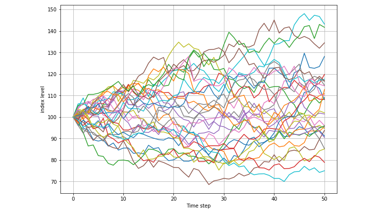
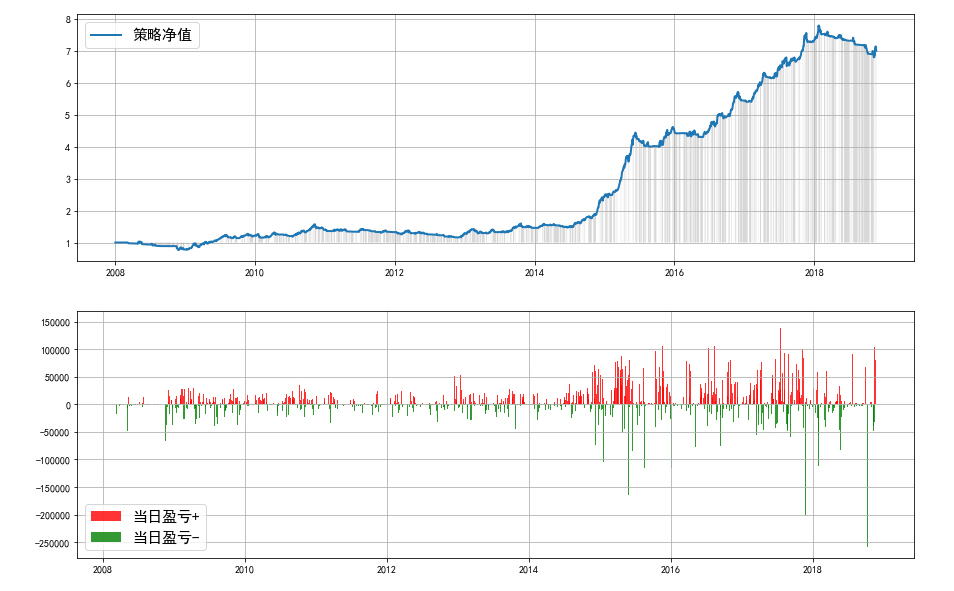

-
Pycing
- Pycing: Prcing Any Derivatives by Python
- Python See more
Pyback
- Pyback is an experimental module to perform backtests on Python. You can construct your quantitative strategy to generate trading signals, and let Pyback to do the rest.
- Python Try it
HMM Strategy
- Hidden Markov Model
- Python See more